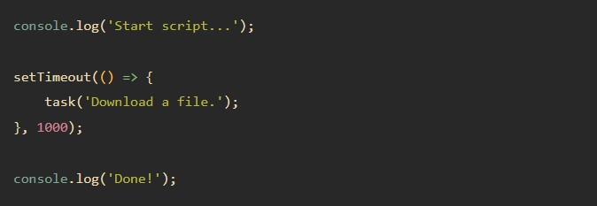
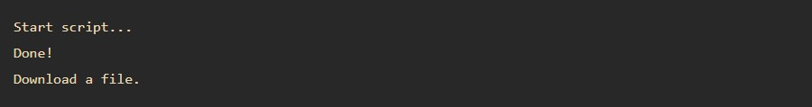
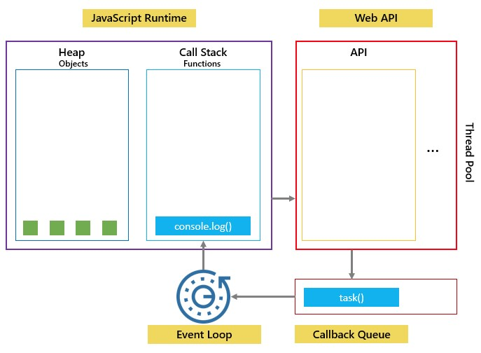

JavaScript is a single-threaded programming language and can only do one thing at a time, it create the
execution contexts and pushes and pops functions onto and off the call stack.
A blocking function such as a
function that downloads a file from a remote server or calls an API from an external server can block all
interactions of the webpage and if it takes a long time to execute, the user cannot interact with the web
browser during the function's execution because the page hangs. For example:
In this example, the task() function emulates a time-consuming task.
The task() function is the
blocking function.
The script hangs for a few seconds and creates the following output:
to execute the script, the JavaScript engine places the first call console.log() on top of the stack and
executes it.
Then, JavaScript places the task() function on top of the call stack and executes the function.
However, it'll take a while to complete the task() function.
Therefore, you'll see the message 'Download a
file.' a little time later. After the task() function completes, the JavaScript engine pops it off the call
stack.
Finally, the JavaScript engine places the last call to the console.log('Done!') function and executes it,
which will be very fast.
To prevent a blocking function from blocking other activities, we put in a callback function for later execution. For example:
In this example, you'll see the message 'Start script...' and 'Done!' immediately. And after that, you'll see the message 'Download a file'.

JavaScript runtime can do only one thing at time. However, the web browser has other components, not just
the JavaScript engine.
The setTimeout(), fetch requests, and DOM events are parts of the Web APIs of the web
browser and can be executed concurrently and asynchronously.
In our example, when you call the setTimeout()
function, the JavaScript engine places it on the call stack, and the Web API creates a timer that expires in
1 second.
After the timer expires in the WEB API, JavaScript engine places the task() function into a queue known as a Callback Queue or an Event Queue.

The event loop is a constantly running process that monitors both the callback queue and the call stack.
If
the call stack is not empty, the event loop waits until it is empty and places the next function from the
callback queue to the call stack.
If the callback queue is empty, nothing will happen: